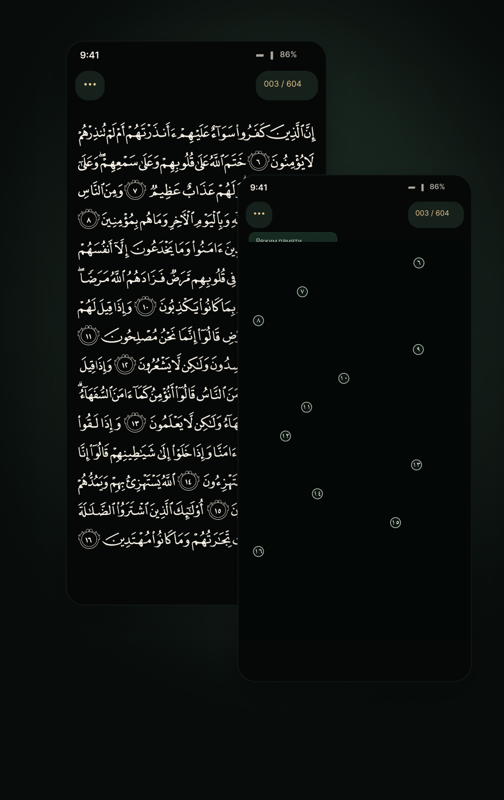
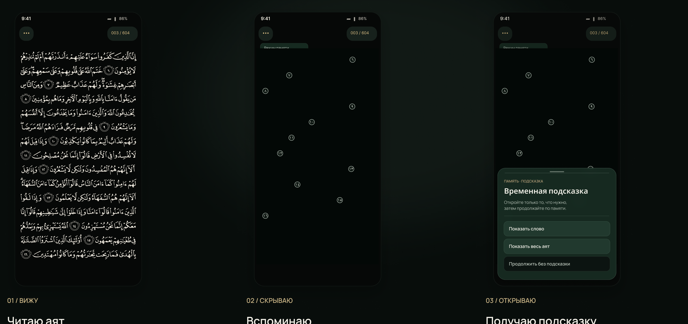
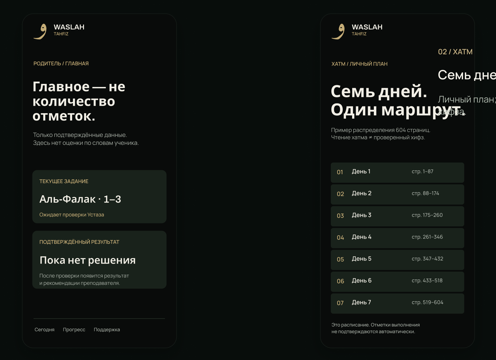
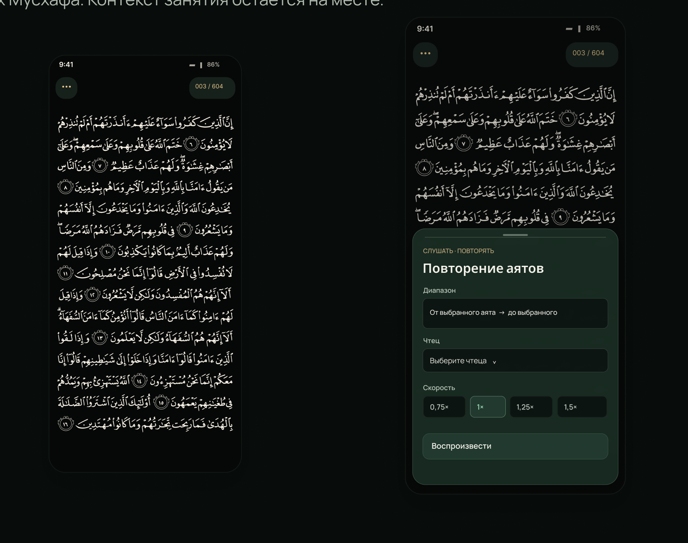
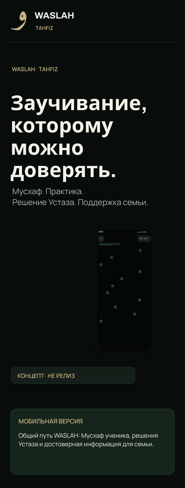
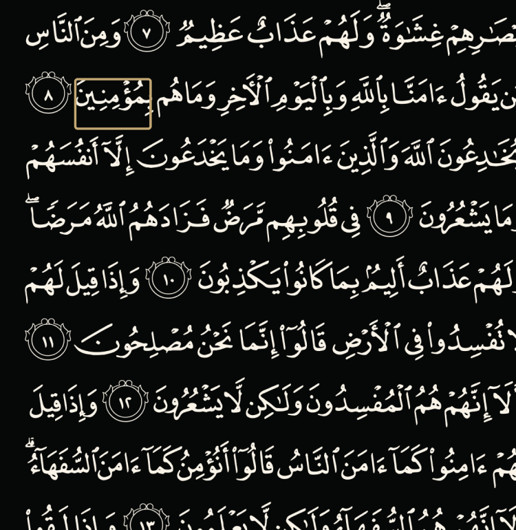
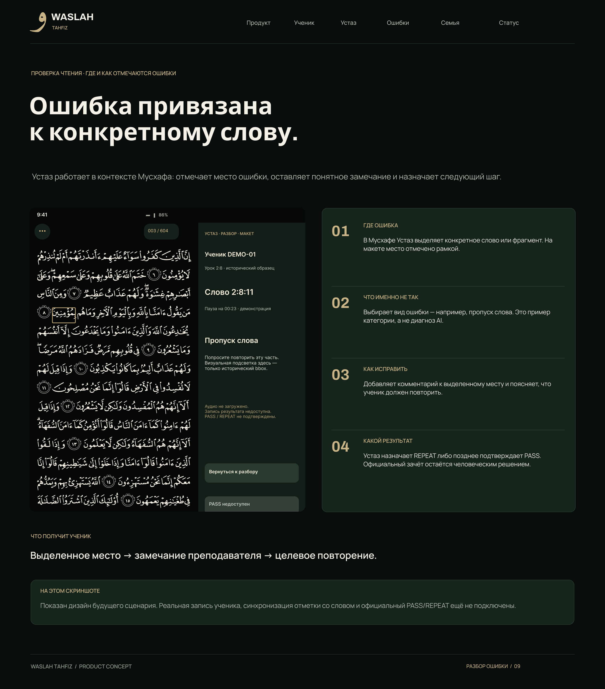
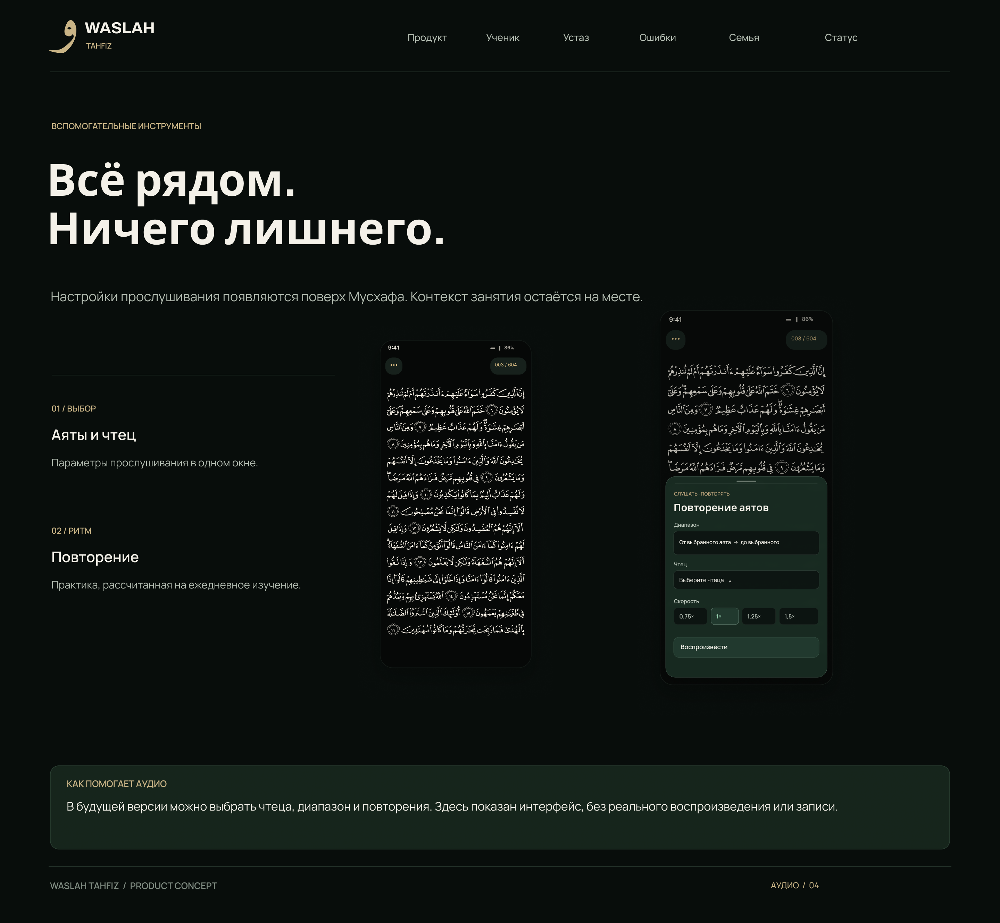
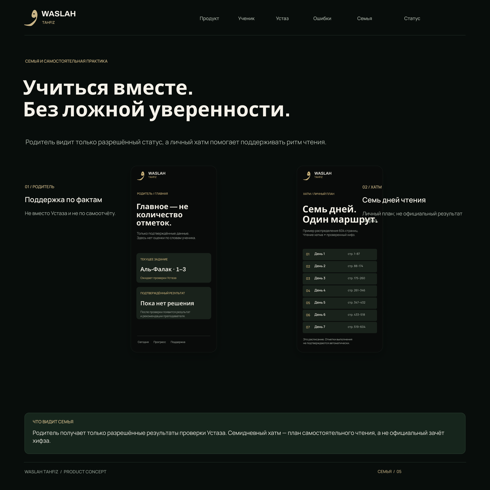
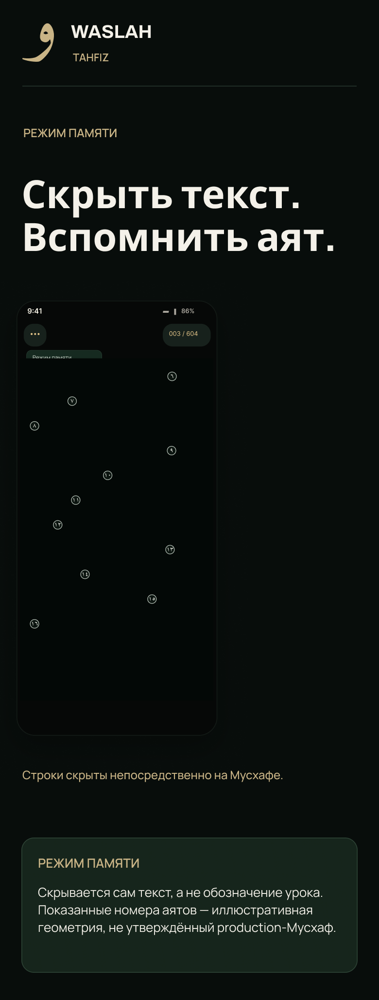

Работает · Test-only
CORE + защищённая Alpha
- Проверенная серверная логика, роли и ограничения полномочий.
- Авторизованные диагностические сценарии и HOLD-only UI.
- Версионированная изолированная Chrome Alpha, проверочные регрессии.
Ученик учит аяты. Устаз отмечает ошибки, назначает повторение и подтверждает результат. Семья видит только проверенный прогресс.

Не просто чтение Корана, а последовательная работа ученика, преподавателя и семьи. Полный сквозной сценарий пока проектируется.
Ученик знает точный объём нового урока.
Пытается воспроизвести аяты по памяти, при необходимости получает подсказку.
Реальная запись и передача аудио ещё не подключены.
Выбирает слово, указывает причину и пишет замечание.
После действительной проверки официальное решение принимает только Устаз.
Доступны лишь разрешённые результаты, не самооценка ребёнка.


Аудио, повторения, mobile UX и хатм показаны как будущие функции. Реальное воспроизведение и зачёт отсутствуют.


Проверьте самостоятельно четыре действия в демонстрации: выбрать слово в Мусхафе, указать тип ошибки, оставить пояснение и назначить повторение.
Интерактивная иллюстрация будущего интерфейса. Это не действующий Мусхаф, не анализ реальной записи и не официальный зачёт.
↓ Нажмите на слово в золотой рамке

Золотая рамка показывает точное место замечания в макете. Позиция слова не подтверждена для production-Мусхафа.
Устаз открывает проверяемый аят и отмечает конкретное слово. Нажмите на слово в золотой рамке слева.
Метка привязана к одному месту в визуальном примере, а не ко всей странице.
Категорию выбирает Устаз. AI здесь ничего не диагностирует.
Можно изменить текст для просмотра сценария. Он никуда не отправляется и не сохраняется.
Официальный PASS возможен только после реальной проверки преподавателем. Здесь никакой результат не записывается.
Выбранный фрагмент, замечание Устаза и задание на повторение появятся в истории урока только после настоящей реализации и подтверждения.

Разделяем реальные тесты, изображения будущего приложения и необходимые условия коммерческого продукта.
На указанную дату PR остаются Draft. G0 PASS, MERGE, платящие пользователи, продуктовая выручка и product-market fit не подтверждены.
Чтение доступно во многих приложениях. WASLAH проверяет другую гипотезу: профессиональная связь «Устаз — ученик — семья» может улучшить качество обучения и готовность платить.
Самостоятельным ученикам — базовая практика; семьям — подтверждённый прогресс; Устазам — организация проверок; медресе — управление учебными группами.
Бесплатная самостоятельная практика, семейная подписка, профессиональные инструменты Устаза и лицензии учреждениям. Модель, цены и спрос ещё не проверены.
Tarteel уже предлагает AI-проверку чтения и скрытие аятов; Quranly — привычки чтения и отслеживание прогресса. Ни одна из этих функций сама по себе не доказывает уникальность WASLAH.
Регулярность занятий, долю завершённых заданий, время проверки Устаза, качество повторения, доверие родителей и реальную готовность платить. Без этих измерений масштабирование — только гипотеза.
Нет утверждённых TAM, CAC, LTV, цен, выручки и оценки компании. Международный рынок — направление исследования, не доказанный результат.
Планируется offline-first практика, безопасная синхронизация уроков, индивидуальные повторы и помощь AI в обнаружении возможных ошибок. AI не заменит решение Устаза.



Международная экспансия зависит от законного источника Корана, локализаций, эффективности обучения и подтверждённой экономики.
WASLAH готовится проверить обучение на реальном сценарии Аль-Фалак 113:1–3 после допуска источника и получения необходимых согласий.
Мы ищем подходящих педагогических и стратегических партнёров, которые помогут проверить образовательную ценность и подготовить коммерческий продукт.